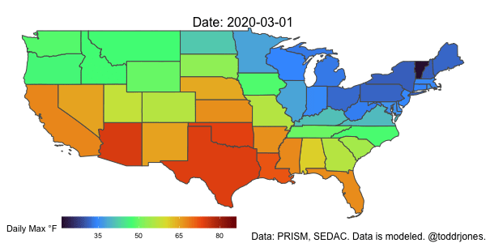

In this post, we will learn how to aggregate fine-grained daily weather data to larger geographies, while weighting by population. We’ll do this for multiple days, and we’ll use parallel processing methods to speed things up, as it can take a long time. We’ll also create an animated graph with the resulting data.
In particular, we’ll aggregate PRISM data, which gives estimated temperature and precipitation (and other things) at a 4km resolution, to the state level. We will weight by population using data from the Census/SEDAC, which comes in approximately a 1km resolution. Much of the credit for what follows goes to Patrick Baylis and his post, from which I base a large portion of what will come. He does a great job of explaining a lot of the things I don’t and gives a good explanation for why one might want to weight weather data by population. Note that when using daily PRISM data, it’s probably good to be aware of something he mentions in another blog post - that the PRISM data may actually be measuring weather from the day before, so you should take this into account.
First, let’s load a bunch of packages:
library(gganimate)
library(prism)
library(tidyverse)
library(exactextractr)
library(raster)
library(future)
options(future.rng.onMisuse="ignore")
library(purrr)
library(furrr)
library(ggthemes)
library(lubridate)
library(beepr)Next, we will download PRISM data using the prism package. To do so, we need to first set the directory we want to store the data in; you many need to manually create the folder. We then specify the variable we want (ppt, tmean, tmin, tmax, tdmean, vpdmin, or vpdmax) and the date range. We will choose the max temperature for the first ten days of March 2020. Note that these files can get pretty big pretty quickly, so we are only looking at a few days.
prism_set_dl_dir("data/prism/tmax")
get_prism_dailys(type = "tmax", minDate = "2020-03-01",
maxDate = "2020-03-10", keepZip=FALSE)We’ll now create a list called file_list, which contains the list of files in the current prism_set_dl_dir directory. Each one corresponds to one day. We will 1) extract the date using regular expressions, 2) see if the data release is stable (TRUE) or not (recent data are not yet considered stable), and 3) determine which variable it is (tmean, tmax, etc.). In this example, 2) will all be true, and 3) will be tmax. Later, we will go through each line of file_list, using the file as input into a function. The function will load the corresponding data file and compute the aggregated value for each state.
file_list <- ls_prism_data(name=TRUE) %>%
rename(file = files) %>%
mutate(date=substr(file, nchar(file)-11, nchar(file)-4),
stable = str_detect(file, "stable"),
type=str_extract(file, "(?<=_)[a-z]*(?=_)"))
head(file_list)## file
## 1 PRISM_tmax_stable_4kmD2_20200301_bil
## 2 PRISM_tmax_stable_4kmD2_20200302_bil
## 3 PRISM_tmax_stable_4kmD2_20200303_bil
## 4 PRISM_tmax_stable_4kmD2_20200304_bil
## 5 PRISM_tmax_stable_4kmD2_20200305_bil
## 6 PRISM_tmax_stable_4kmD2_20200306_bil
## product_name date stable type
## 1 Mar 01 2020 - 4km resolution - Maximum temperature 20200301 TRUE tmax
## 2 Mar 02 2020 - 4km resolution - Maximum temperature 20200302 TRUE tmax
## 3 Mar 03 2020 - 4km resolution - Maximum temperature 20200303 TRUE tmax
## 4 Mar 04 2020 - 4km resolution - Maximum temperature 20200304 TRUE tmax
## 5 Mar 05 2020 - 4km resolution - Maximum temperature 20200305 TRUE tmax
## 6 Mar 06 2020 - 4km resolution - Maximum temperature 20200306 TRUE tmaxThe next step is to get a shapefile for states. (We could also get counties, etc.)
states = tigris::states(cb = TRUE, resolution = "20m") %>%
filter(!NAME %in% c("Alaska", "Hawaii", "Puerto Rico"))Download the population raster data, load it as a raster, and crop it based on the state shapefile. You can download it at SEDAC by selecting Census 2000 and Population Counts for Continental US.
population_raster = raster("data/census/population/usgrid_data_2000/geotiff/uspop00.tif")
population_crop = crop(population_raster, states)Now we’ll create a function that aggregates the weather data. We will create both unweighted and weighted versions. Note that we get slightly different results if we don’t use weather_crop and population_crop and instead use weather_raster and population_raster. If anyone can shed light on why, I’d be interested in hearing.
daily_weather <- function(file, date, type, stable) {
#get the weather raster variable based on the file name
# note here that you may need to adjust your working directory so that it points
# to the correct place
weather_raster = raster(paste0("data/prism/tmax/", file, "/", file, ".bil"))
#crop the weather raster based on the states shapefile
weather_crop = crop(weather_raster, states)
#use resample to make the population_crop rectangle be the same as the
#weather_crop rectangle as they were initially not perfectly overlapping.
#we can't use exact_extract unless we do this step
population_rs = raster::resample(population_crop, weather_crop)
#we will work on the new variable called data
data <- states
#aggreagte to states without weighting by population (unweighted)
data[[paste0(type, "_u")]] <- exact_extract(weather_crop, data, fun = "mean")
#aggreagte to states while weighting by population (weighted)
data[[paste0(type, "_w")]] <- exact_extract(weather_crop, data, fun = "weighted_mean", weights=population_rs)
#create columns from the date and type variables
data$date <- date
data[[paste0(type, "_stable")]] <- stable
#select relevant columns from the data frame
data <- data.frame(data) %>% arrange(NAME) %>% dplyr::select(c(6,13,14,11,12))
data
}We will then apply the above daily_weather function to each row of file_list using pmap. Or, actually future_pmap, which is a parallel processing version of pmap. You can change the number of workers based on your computer’s setup. (If you just want to use pmap, get rid of the plan() function and swap pmap for future_pmap). The function produces a dataframe, which we store in the weather column of the file_list dataframe. Each element (row) of the weather column contains its own dataframe. This dataframe within a dataframe contains the aggregated weather for the day for each state.
plan(multisession, workers = 7)
file_list2 <- file_list %>%
mutate(weather=future_pmap(across(c(file, date, type, stable)),
~ daily_weather(..1, ..2, ..3, ..4))) %>%
as_tibble
#this step can take some time, so you can get a notification when it is done
beep()Next, we’ll create the weather dataframe, which binds together all of the dataframes from file_lists’s weather column. weather is at the day-state level.
weather <- bind_rows(file_list2$weather)
head(weather)## NAME date tmax_stable tmax_u tmax_w
## 1 Alabama 20200301 TRUE 16.8803024 16.193275
## 2 Arizona 20200301 TRUE 19.1284809 23.761177
## 3 Arkansas 20200301 TRUE 19.2444706 19.301489
## 4 California 20200301 TRUE 16.4584484 19.828274
## 5 Colorado 20200301 TRUE 11.7001238 13.523680
## 6 Connecticut 20200301 TRUE 0.6898845 1.343361Merge in the geography information from states (this step is probably not necessary if you don’t want to plot).
weather2 <- left_join(weather, states %>% dplyr::select(NAME, geometry), by=c("NAME"))Finally, we’ll do a bit of cleaning, etc., such as creating Fahrenheit versions of the variables and creating variables for year, month, and day.
weather2 <- weather2 %>% mutate(tmax_u_f = tmax_u*(9/5)+32,
tmax_w_f = tmax_w*(9/5)+32,
year=substr(date,1,4),
month=substr(date,5,6),
day=substr(date,7,8)) %>%
rename(state=NAME) %>%
dplyr::select(state, date, year, month, day, geometry, tmax_stable,
tmax_u, tmax_u_f, tmax_w, tmax_w_f)If you wanted, you put some of the above code into additional function(s), which would make it easier to do this for multiple weather variables.
Lastly, we’ll plot the data using gganimate.
a <- ggplot() +
geom_sf(data = weather2, aes(geometry=geometry, fill = (tmax_w_f)), show.legend = TRUE) +
scale_fill_viridis_c("Daily Max °F", option="H", breaks=c(-10, 5, 20, 35, 50, 65, 80, 95, 110)) +
theme_void() +
theme(plot.subtitle = element_text(size=16, hjust = 0.5, vjust=-3)) +
theme(plot.caption = element_text(size=12)) +
labs(caption = "Data: PRISM, SEDAC. Data is modeled. @toddrjones.") +
theme(legend.position = c(0.25, -.001), legend.key.size = unit(1.5,"line"),
legend.direction = "horizontal",
legend.box = "horizontal") +
guides(fill = guide_colourbar(barwidth = 15, barheight = 1)) +
transition_time(as_date(date)) +
labs(subtitle = paste('Date: {frame_time}'))
anim_save("tmax_2020.gif", a, end_pause=8, width = 600, height = 300, duration=5, nframes=100)